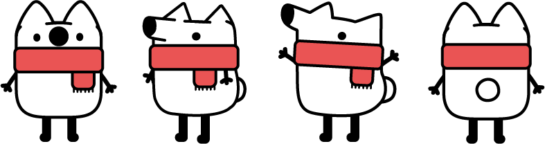

知乎官方 CLI 快照已接入
查看热榜
ZHIHU HOTLIST · KNOWLEDGE BOX
不只看热闹，
不只看热闹，
跟看山一起看门道。
从知乎热榜出发，把一条热点拆成四个有趣、有用、能拿去聊的知识盲盒。
无需登录即可完整体验 · 开盒进度保存在当前浏览器

热榜告诉你发生了什么，
我带你看看为什么。
我带你看看为什么。
LIVE DEMO CASES
今天，想拆哪条热榜？
由知乎 CLI 热榜快照出发，用社区内容补充背景、原理、尺度和奇闻。
SNAPSHOT
最新热榜
读取知乎开放平台快照
GitHub Pages 为静态展示，当前使用最近一次知乎 CLI 热榜快照。
刘看山发现了 4 个知识暗门0 / 4 已打开
TODAY'S TALK CARD
今天，有的聊了
四个暗门全部打开，这张谈资卡可以直接带走。
今天有的聊
看山认证自然开场
KNOWLEDGE FOOTPRINT
不用登录，热点也会变成知识足迹
自动保存进度
当前浏览器会记住已打开的知识暗门。
生成知识护照
记录今天看懂的原理、制度、尺度和轶事。
积累谈资历史
需要聊天灵感时，随时翻出曾经带走的门道。